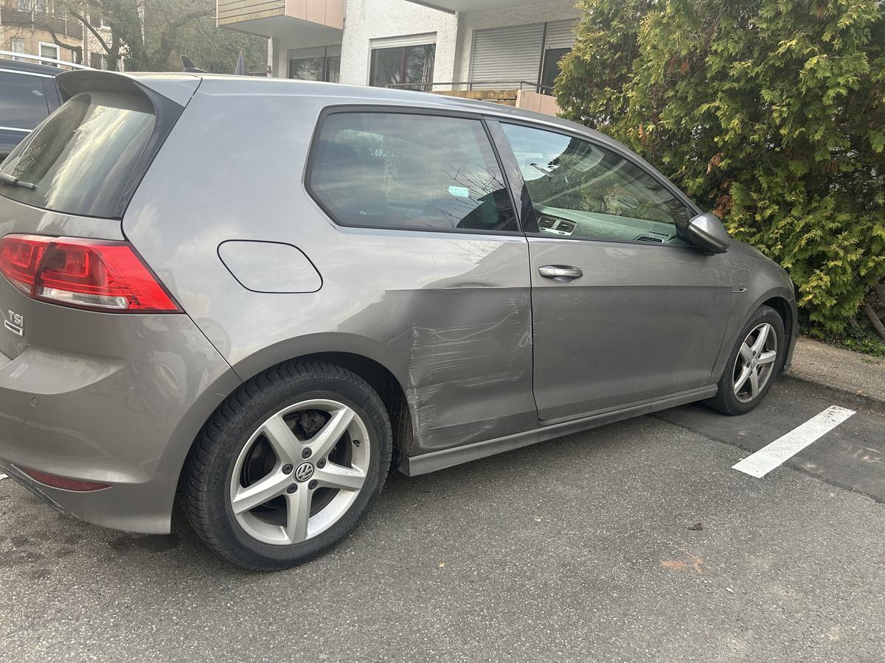

Präzise und zuverlässig
Ingenieurlich bewertet
Unabhängige technische Schadenbewertung vor Ort in Heumaden, Sillenbuch und Umgebung – persönlich durch Dipl.-Ing. Bastian Brückers.
Mein Kostenfrei-Versprechen: Bei einem von mir angenommenen Haftpflichtschadengutachten erhalten Sie keine Rechnung von mir – auch bei Teilschuld oder wenn die gegnerische Versicherung nur teilweise reguliert beziehungsweise ihre Eintrittspflicht ablehnt.*
Ingenieurlich bewertet
Direkter Ansprechpartner
Auch bei Teilschuld
Mein besonderer Service
Bei einem von mir angenommenen Auftrag für ein Haftpflichtschadengutachten stelle ich Ihnen keine Gutachterkosten in Rechnung. Das gilt auch dann, wenn eine Teilschuld besteht, die Versicherung nur teilweise reguliert oder ihre Eintrittspflicht ablehnt.
* Gilt für von mir angenommene Haftpflichtschadengutachten. Kaskogutachten, Privatgutachten, Fahrzeugbewertungen und ausdrücklich vereinbarte Sonderleistungen sind nicht automatisch umfasst. Bedingungen im Detail.
In wenigen Schritten vom ersten Anruf bis zum fertigen Unfallgutachten für Heumaden, Sillenbuch und Umgebung.
Ihr Ansprechpartner
Ich bin in Stuttgart-Heumaden ansässig und besichtige Fahrzeuge in Heumaden, Sillenbuch, Riedenberg und den angrenzenden Stadtteilen vor Ort.
Als Diplom-Ingenieur (FH) der Fahrzeugtechnik, gelernter Kfz-Mechaniker und mit über 17 Jahren Erfahrung in der Automobilentwicklung bei Mercedes-Benz verbinde ich Ingenieurwissen mit praktischer Fahrzeugerfahrung.
Fachlehrgänge bei der Gesellschaft für Technische Überwachung (GTÜ) ergänzen meinen Qualifikationsweg im Gutachterwesen. Ich dokumentiere Schäden unabhängig von Versicherungen und Werkstätten, objektiv und technisch nachvollziehbar.
Mein Gutachten liefert die technische Grundlage für die weitere Regulierung. Rechtliche Fragen oder die Durchsetzung von Ansprüchen gehören in die Hände einer entsprechend qualifizierten Rechtsberatung.
Kurze Ersteinschätzung
Schildern Sie mir kurz den Unfall und den sichtbaren Schaden. Ich erkläre Ihnen verständlich, welche technische Dokumentation in Ihrer Situation passt und welche Unterlagen benötigt werden.
Leistungen
Von der Vor-Ort-Besichtigung bis zur nachvollziehbaren Dokumentation: Sie wissen vor der Beauftragung, welchen Umfang Sie erhalten und welche Kostenregelung gilt.
Ich dokumentiere den sichtbaren und technisch feststellbaren Schaden, kalkuliere die Reparatur und ordne relevante Fahrzeugwerte nachvollziehbar ein.
Eine sorgfältige fotografische und schriftliche Dokumentation hält den festgestellten Zustand fest und erleichtert die spätere technische Einordnung.
Ich ermittle den Fahrzeugwert anhand von Zustand, Ausstattung, Marktumfeld und vorhandenen Unterlagen – etwa bei Kauf, Verkauf oder für Versicherungszwecke.
Nach einer Reparatur dokumentiere ich den instand gesetzten Zustand als nachvollziehbaren technischen Nachweis.
Mein Einzugsgebiet umfasst Stuttgart-Heumaden, Stuttgart-Sillenbuch, Stuttgart-Riedenberg sowie umliegende Orte wie Hedelfingen, Degerloch, Ostfildern, Ruit, Esslingen und Filderstadt.
Standort
Am Sonnenweg 15A, 70619 Stuttgart. Die Besichtigung kann nach Absprache auch direkt bei Ihnen, am Fahrzeugstandort oder in der Werkstatt stattfinden.
Kurze Wege, persönliche Betreuung und ein unabhängiges Unfallgutachten für Heumaden, Sillenbuch und Umgebung.
Ich arbeite ohne Bindung an Versicherungen oder Werkstätten und dokumentiere den Schaden objektiv und technisch nachvollziehbar.
Ich komme direkt zu Ihnen — ob in Heumaden, Sillenbuch, Riedenberg, zu Hause, in der Werkstatt oder am Unfallort.
Zeitnahe Terminvergabe und zügige Erstellung Ihres Gutachtens. In dringenden Fällen auch kurzfristig möglich.
Bei angenommenen Haftpflichtschadengutachten stelle ich Ihnen keine Rechnung – auch bei Teilschuld oder abgelehnter Eintrittspflicht.
Mein Kostenfrei-Versprechen: Bei einem von mir angenommenen Haftpflichtschadengutachten erhalten Sie keine Rechnung von mir – unabhängig davon, ob die Versicherung vollständig, nur teilweise oder gar nicht eintritt.*
Geltungsbereich verständlich erklärtEinblick in die Dokumentation
Die Beispiele zeigen, welche Details bei einer Besichtigung technisch erfasst werden. Sie stellen keine Zusage zu einem bestimmten Regulierungsergebnis dar.

Neben sichtbaren Kratzern und Verformungen wird geprüft, ob Halter, Sensorik oder angrenzende Bauteile technisch betroffen sein können. Fotos, Messdaten und Kalkulation werden nachvollziehbar zusammengeführt.

Die Besichtigung erfasst Lage und Ausmaß der Beschädigung, mögliche Übergänge zu Nachbarbauteilen sowie die technisch geeignete Reparaturmethode.

Bei Schäden an Tür und Seitenteil werden alle betroffenen Bereiche einzeln dokumentiert und technisch in den Gesamtumfang eingeordnet – einschließlich Reparaturweg und erforderlicher Nebenarbeiten.
Kurze Antworten für Geschädigte aus Stuttgart-Heumaden, Sillenbuch, Riedenberg und Umgebung.
Nach einem unverschuldeten Unfall ist eine frühe technische Dokumentation sinnvoll, bevor repariert wird. Ob ein ausführliches Gutachten oder eine andere Dokumentation passt, kläre ich mit Ihnen anhand des konkreten Schadens.
Ja. Ich unterstütze Sie vor Ort in Stuttgart-Heumaden, Sillenbuch, Riedenberg und der Umgebung. Je nach Situation kann die Begutachtung direkt am Fahrzeugstandort erfolgen.
Bei einem von mir angenommenen Auftrag für ein Haftpflichtschadengutachten erhalten Sie von mir keine Rechnung. Das gilt auch bei Teilschuld sowie dann, wenn die gegnerische Versicherung nur teilweise reguliert oder ihre Eintrittspflicht ablehnt. Kaskogutachten, Privatgutachten und Fahrzeugbewertungen sind davon nicht automatisch umfasst.
Ich werde von Ihnen beauftragt und dokumentiere den Fahrzeugschaden technisch nachvollziehbar. Das Gutachten kann als Grundlage der Schadenregulierung dienen; rechtliche Fragen klären Sie bei Bedarf mit einer Rechtsanwältin oder einem Rechtsanwalt.
Weitere Antworten zu Ablauf, Unterlagen, Kosten und unterschiedlichen Schadenfällen.
Wissen rund um Unfall und Gutachten
Verständliche Fachinformationen mit meinem CI-Männchen. Die ausführlichen Beiträge öffnen sich auf der Hauptseite des Ingenieurbüros Brückers.
Die wichtigsten Schritte am Unfallort und vor der technischen Schadenaufnahme.
Warum eine saubere Schadenfeststellung auch bei einer Haftungsquote wichtig bleibt.
Welche Feststellungen, Werte und Kalkulationen in einem Gutachten enthalten sind.
Sie benötigen ein Unfallgutachten in Stuttgart-Heumaden, Sillenbuch oder Umgebung? Für angenommene Haftpflichtschadengutachten erhalten Sie von mir keine Rechnung – auch bei Teilschuld.*
Ingenieurbüro Brückers
Am Sonnenweg 15A
70619 Stuttgart-Heumaden
Montag — Freitag: 08:00 — 22:00 Uhr
Samstags und Sonntags: nach Vereinbarung